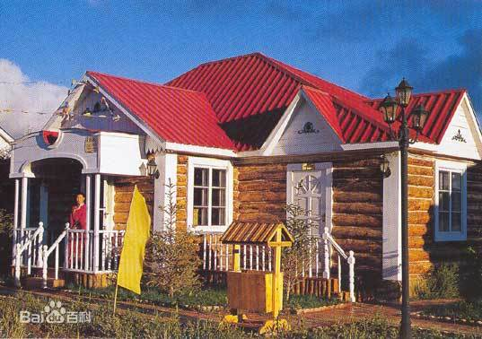

- 民族简介
- 文化习俗
- 历史发展
- 旅游介绍
俄罗斯族
俄罗斯 俄罗斯族，中华民族五十六个民族之一，语言属印欧语系斯拉夫语族东斯拉夫语支。中国境内俄罗斯族使用俄文，一般兼通俄、汉、维吾尔、哈萨克等多种语言，在社会上，俄罗斯族讲汉语，使用汉文，在家庭内，在与本民族交往时讲俄语，使用俄文。 中国的俄罗斯族是俄罗斯移民的后裔，经过百年的同化，其外貌、长相、风俗和习惯等，已与俄罗斯的俄罗斯人完全不同。而渐渐形成了自己的民族特色。 俄罗斯族散居在新疆、内蒙古、黑龙江、北京等地，主要集中聚居在新疆维吾尔自治区西北部、黑龙江北部和内蒙古自治区东北部的呼伦贝尔市下辖额尔古纳市等地，根据2010年第六次全国人口普查统计，中国境内俄罗斯族总人口数为15393人。
“俄罗斯人”（Russian、ΡYССΚΝe）一词源自于欧洲古代斯拉夫人的部落名称——罗斯。 公元1世纪时被罗马史家称为“维勒底人”。 元朝文宗皇帝时，曾征调金帐汗国境内的1万名罗斯军人入 大都充扈卫亲军，并赐给土地，史书中称为色目人。 清朝文书中称为“罗刹”，这是俄罗斯族祖先罗斯部族的音译。 18世纪后期至19世纪末和俄国十月革命前后，由于不堪忍受沙皇俄国的残酷统治，大批俄罗斯人从西伯利亚等地涌入中国新疆北部地区。盛世才于1934年召开新疆第一次民众代表大会，已加入中国国籍的俄罗斯人以“归化族”的名义出席了会议。 1935年，新疆召开了第二次民众代表大会。会议对新疆各少数民族的划分和称谓做了具体规定，并通过了相应的决议案。其中，加入了中国国籍的俄罗斯人和其他欧洲人被冠以“归化族”的名称。 1949年新中国成立后，改称俄罗斯族。 ">
信仰
俄罗斯族大多信仰东正教，少数人信仰基督教。 中国俄罗斯族的年长者对东正教信仰较深，壮年和青少 年则大多按东正教徒的常规欢度节日，但多不诵读圣经，不进行祈祷。 新中国成立前，俄罗斯族孩子出生后，按教规到教堂去做洗礼，在教堂举行婚礼，请神父主持葬礼。新中国成立后，这些仪式日渐减少和消失。 20世纪90年代以来，俄罗斯族中的宗教仪式有所恢复。在新疆的伊犁、塔城、乌鲁木齐，黑龙江的哈尔滨、齐齐哈尔等地，都有俄罗斯族建造的教堂。 俄罗斯族因与汉族通婚较多，生活习惯上也深受其影响，如春节时拜年请客，清明节祭祖扫墓，逢已故亲属的生日和忌日进行祭祀，墓前不立十字架而立墓碑等 。
建筑
俄罗斯族传统住宅多为砖木结构、高大宽敞的平房，也有单一木材结构的房屋。 铁皮屋顶大多涂上彩色油漆，向四周延伸形成廊檐。屋顶上开有天窗，可调节室内温度和空气流通。屋内分为客厅、居室、厨房等，多砌有取暖的火墙。室内铺有地毯，陈设有沙发、桌椅、书架、衣橱等。 农村的俄罗斯族民居，房屋四周砌有院墙，庭院内栽植有各种花木，后院建有畜圈、地窖和库房。有的村居自然环境优美，如俄罗斯族居住较多的塔城市二工镇喀浪古尔村，弯弯的小河从村中流过，一幢幢房屋和庭院被树林掩蔽着，显出一派宜人的田园风光。 在额尔古纳河流域林区一带的俄罗斯族，有的还居住传统的俄罗斯“木刻楞”房屋，既保留了俄式的建筑风格，又加上新的设计 [1] 。
服饰
俄罗斯族传统服饰，男子多穿斜领麻布 衬衫和呢子上衣，系腰带，下穿细腿长裤、长筒皮靴。 妇女多穿领口带褶的粗麻布衬衫，外罩无袖长袍“萨拉凡”，或穿一种家织的毛织裙。夏季多穿连衣裙。农村居民多在皮靴上套穿橡胶浅帮套鞋，冬季则穿毡靴和用自纺毛线织成的袜子。 现在，平日里人们多着西装革履 。
饮食
俄罗斯族主食是小麦面包，多为烘烤时中间裂开的长 形大面包，称为“列巴”，进食时将其切成片状，上涂果酱或奶油。副食有各种蔬菜、鱼、肉、奶制品等。节日食品有馅饼、大圆面包、密糖饭和红甜菜汤、酸牛奶及各种做法的鱼。 俄罗斯族男子喜欢喝伏特加（白酒）和自制的啤瓦（啤酒），还有自制的各种类似啤酒的“格瓦斯”饮料。由于与其他民族的长期交往，抓饭、牛奶米饭、牛奶面条、馕、包子、饺子等也成了俄罗斯族的家常饭。许多俄罗斯族习惯用碗筷。家庭主妇多善于烤制各种香甜可口的面包和饼干 [1] 。
历史
中国的俄罗斯族主要是从俄罗斯移居而来。早在清朝顺治元年(1644年),侵入我国黑龙江地区的部分沙皇俄国士兵被俘归降后，被清政府送往北京，编入八旗。在后来的顺治七年（1650年）、康熙七年（1668年）、康熙二十二至二十四年（1683—1685年）间，又有百余俄罗斯士兵，随军队自黑龙江北雅克萨边城迁居北京。今北京的罗、何、姚、田、贺五姓俄罗斯族人约200余人，即他们的后裔。
18世纪前后，有部分俄罗斯逃亡士兵、谋生的农民和传教士等迁入我国新疆北疆。鸦片战争以后，随着沙俄对中国的侵略，在新疆北部和黑龙江北部建立居民点，又有大批俄罗斯农民迁入中国境内。沙俄利用各种不平等的条约，在新疆的伊犁、塔城、乌鲁木齐等地设立领事馆和贸易圈，不少俄罗斯商人和手工业者迁入。十月革命后，这些俄罗斯农民、商人和手工业者大部分加入了中国的国籍。十月革命期间，流入新疆的沙俄士兵，被安置在伊犁、塔城、阿勒泰和乌鲁木齐。1932-1938年，在苏联远东地区定居的许多华侨被强行谴送回国，这些华侨大多携带所娶俄罗斯族妻子进入新疆。据统计，当时进入伊犁、塔城的有19000余人。今天，新疆的俄罗斯族多数是这些人的后裔。1955—1957年，大批保留有俄国国籍的俄罗斯人迁返苏联，新疆俄罗斯族的人口因而剧减 。 另外，在内蒙古自治区额尔古纳左旗、额尔古纳右旗与俄罗斯接壤的地带，也有少量俄罗斯人。这一代居民早先多是闯关东的山东人，他们或淘金，或伐木，或种地，后来逐渐与额尔古纳河对岸的俄罗斯人通婚。今天，额尔古纳河流域一带的俄罗斯族大多是他们的后裔1。
新中国成立前，俄罗斯族在消除新疆战乱，保持新疆社会稳定方面屡立战功。1931年被新疆省政府招募组成俄罗斯“归化军”，人数最多时曾有3个团，在击垮甘肃军阀马仲英部队的战斗中起了重要作用。1933年，归化军与新疆各民族一道，促成了在乌鲁木齐发生的“四一二”政变，推翻了金树仁军阀政府在新疆的反动统治。 1944-1949年，俄罗斯族人在新疆三区革命军事斗争中起了重要作用。富有军事知识和战斗经验的俄罗斯族军官进入各级指挥员岗位，不少俄罗斯族人被任命为营、连、排级指挥员，还有的人在三区政府的军事厅和内务厅担任重要领导职务，甚至为革命斗争献出了宝贵的生命。 2001年4月16日，经内蒙古自治区民政厅批准，在呼伦贝尔市的额尔古纳市建立了全国惟一的俄罗斯族民族乡——室韦俄罗斯族民族乡 。
呼伦贝尔大草原
呼伦贝尔大草原位于呼伦贝尔市西部，得名于大草原上的呼伦湖与贝尔湖。从大兴安岭以西一直到蒙古国边境的草原都是它的一部分，它北至俄罗斯边境、南临阿尔山，境内有满洲里、海拉尔、额尔古纳等城市，以及呼和诺尔、鄂温克、巴尔虎等草原牧区，是中国有名的大草原。 每年的6-9月是呼伦贝尔大草原的旅游季，假期自驾非常适宜。尤其7、8月间大草原牧草茂盛，适合在大草原腹地骑马、垂钓，或在西部的呼伦湖上泛舟。在呼和诺尔草原、巴彦呼硕草原等旅游景区有摔跤、射箭、套马等表演以及歌舞篝火晚会，你还能住宿蒙古包，体验草原生活。农历六月初四开始的那几日，还可赶上盛大的那达慕大会，感受草原上的丰富传统。 来到大草原西北角的满洲里，可参观套娃广场和中国陆路口岸的国门，夜晚走在中苏金街上，两侧闪着俄文的霓虹让你仿佛置身于莫斯科街头。从满洲里驾车顺着边防公路一路北上，沿途经草原、湿地以及白桦林区，一直可到小镇室韦，这里是蒙古族的故乡、草原文化的发祥地，如今这里弥漫着俄罗斯风情，你可以住宿俄罗斯族的木刻楞、品尝大列巴和蓝莓酱的美味。 呼伦贝尔的天气冷得比较早，8月底就已经开始草枯叶黄了。而9月中下旬却正是去大草原东部林区看红叶和黄叶的好时节，你既可在亚洲湿地——根河湿地，看到壮阔的河谷美景，又可以去大草原南部欣赏红花尔基森林公园的缤纷林色。 呼伦贝尔大草原拥有优质的牧草，这里出产的羊肉肉质鲜美，没有膻味，不可不尝。在满洲里、拉布大林、海拉尔城内随处都有吃涮羊肉和烤肉的馆子，有正宗的手把肉、涮羊肉、炸羊尾。若是人少，不妨要一条烤羊腿，如果人多，还可以品尝“整羊席”。